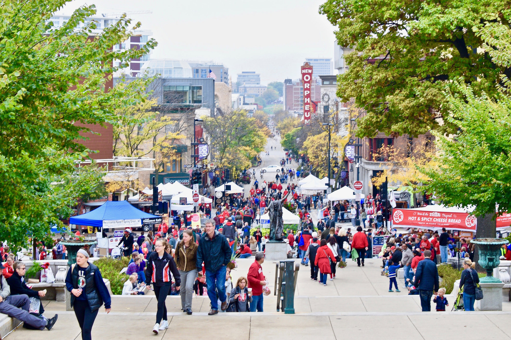

Madison's an pretty eventful place with ton's of things to do year round! Below you will find some of the best events to attend to in this wonderful town.
Image above: Dane County Farmer's Market image by Samantha Haas at https://www.madcitydreamhomes.com/blog/nonprofit-spotlight-dane-county-farmers-market.html, CC BY-NC-ND.
Dane County Farmer's MarketThis farmer's market is one of the biggest producers-only farmer's market in the country. It is available for the majority of the year from April 16th through November 12th and is held at the Capitol Square every Saturday morning from 6:15AM–1:45PM
| Address | 200 Martin Luther King Jr Blvd, Madison, WI 53703 |
| Phone | (608)-455-1999 |
| Operating Hours | Closed Monday through Friday Saturday 6:15AM-1:45PM |
Image above: Ironman runs smoothly thanks to tireless volunteers image by Joe Vanden Plas at https://www.ibmadison.com/ironman-runs-smoothly-thanks-to-tireless-volunteers/, CC BY-NC-ND.
Iron Man TriathlonThe world famous triathlon event comes to Madison once a year and is held in the early weeks of September. If you're feeling up for the challenge of running a marathon, biking 112 miles, and swimming 2.4 miles all around this beautiful city, this year's event will be held on September 11th and more information can be found on their site. (You must register prior to participating in the Iron Man)
| Address | 800 University Ave, Madison, WI 53706 |
| Phone | (608)-263-2246 |
| Operating Hours | Monday through Friday 10AM-7PM Saturday and Sunday 11AM-5PM |
Image above: Madison Night Market image by Downtown Madison at https://visitdowntownmadison.com/madison-night-market, CC BY-NC-ND.
Madison Night MarketThis night market located in the heart of downtown Madison and has a little bit of everything to satisfy whatever itch you have. Vendors showcase a wide variety of products, art, food, and gifts and the event also includes live music, artists, and popup food carts for the public (DISCLAIMER: these are last year's dates, dates for this year's night market have yet to be announced..) Theses are the following dates where the night market will be active: August 19th, September 16th, October 22nd, November 18th, and December 16th.
| Address | Along State St. and Gilman St. |
| Operating Hours | 4-9PM on the dates above |